建議先用這6張
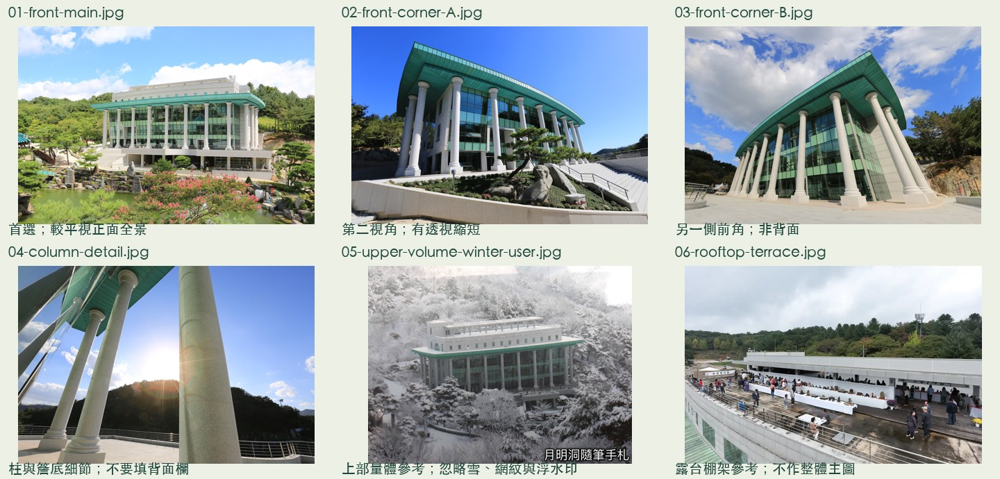
外形必留
長方形三層主體、前方8根與兩側各4根大型石柱（來源列16根）、退在柱廊後的玻璃立面、綠色大簷帶、上方白色退縮量體、屋頂露台與長條棚架。柱間與下方開放處保留空隙；不要生成三角山牆或傳統八角亭屋頂。
尚缺的資料
- 完整且較新的背立面，包含與山坡連接處
- 垂直俯拍屋頂：各層退縮、露台邊界及棚架配置
- 兩側完整短立面，樹木遮擋少，避免只拍到前轉角
- 入口、下層出入口、弧形基座與坡道的完整連接
- 可靠總長、總深、總高；官方柱徑約1m可作次級比例參考，非本案實測
全部18張參考
含日景、細節、環境、夜景與2013年施工局部。施工與夜景不建議混入同一次幾何重建。拍攝日期未知時不以發布日代替。
 festival-31 rooftop-detail
festival-31 rooftop-detail來源明示3.16館屋頂露台；用於細長上層棚架、露台及欄杆參考，不當成整棟外觀。
800 × 533 · 拍攝日期未知 · 頁面日期 2026（活動年，頁面發布日未確認）來源頁
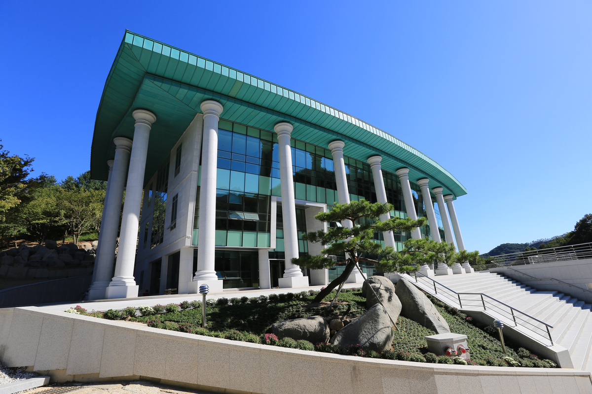
official-corner-a angle-view正面斜角A：可看柱廊深度、玻璃立面及側端轉折；低視角會產生透視縮短。
1200 × 800 · 拍攝日期未知 · 頁面日期 未標示來源頁
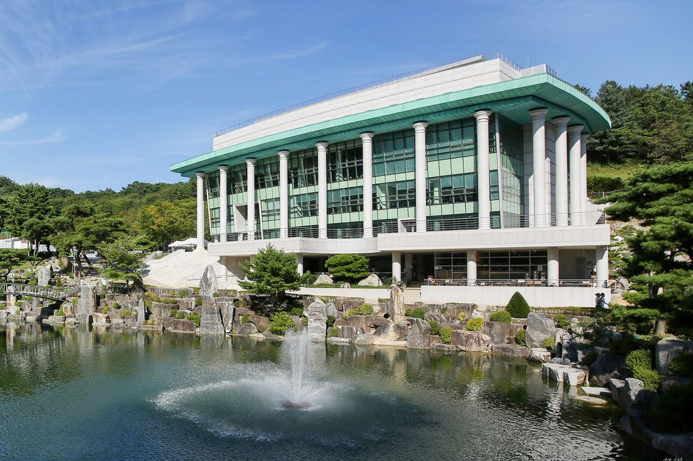
official-lake context跨湖正面斜角：下層基座與建築相對湖岸的高差；湖水與倒影不屬建築。
1200 × 800 · 拍攝日期未知 · 頁面日期 未標示來源頁
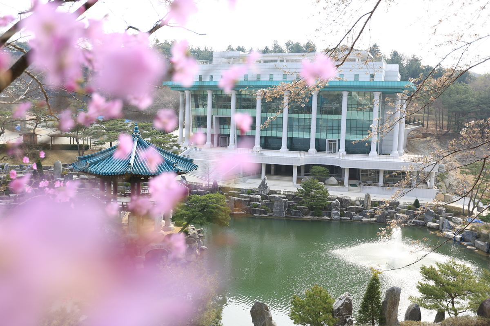
official-blossom context春季跨湖全景，前景花朵遮擋建築；不作主要輸入。
1200 × 800 · 拍攝日期未知 · 頁面日期 未標示來源頁
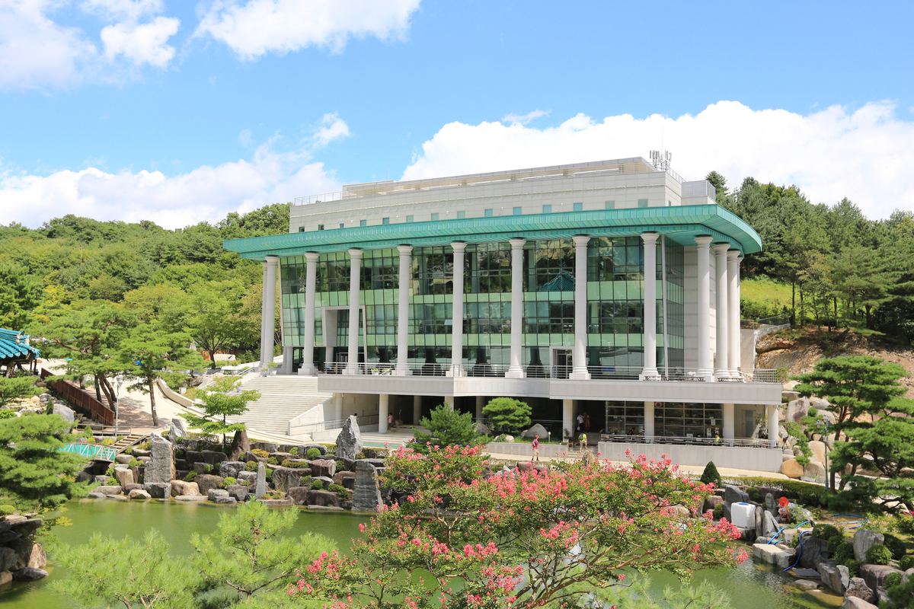
official-spring main-view較平視的正面全景：長正立面、完整大柱列、綠色簷帶、上方白色退縮樓體。湖與植栽只作環境參考。
1200 × 800 · 拍攝日期未知 · 頁面日期 未標示來源頁
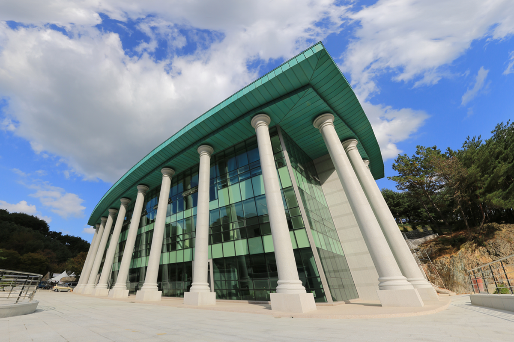
official-sky angle-view正面斜角B：與A相反方向的柱廊轉角。可核對短側面、簷板厚度與柱列。不是完整背面。
1200 × 800 · 拍攝日期未知 · 頁面日期 未標示來源頁
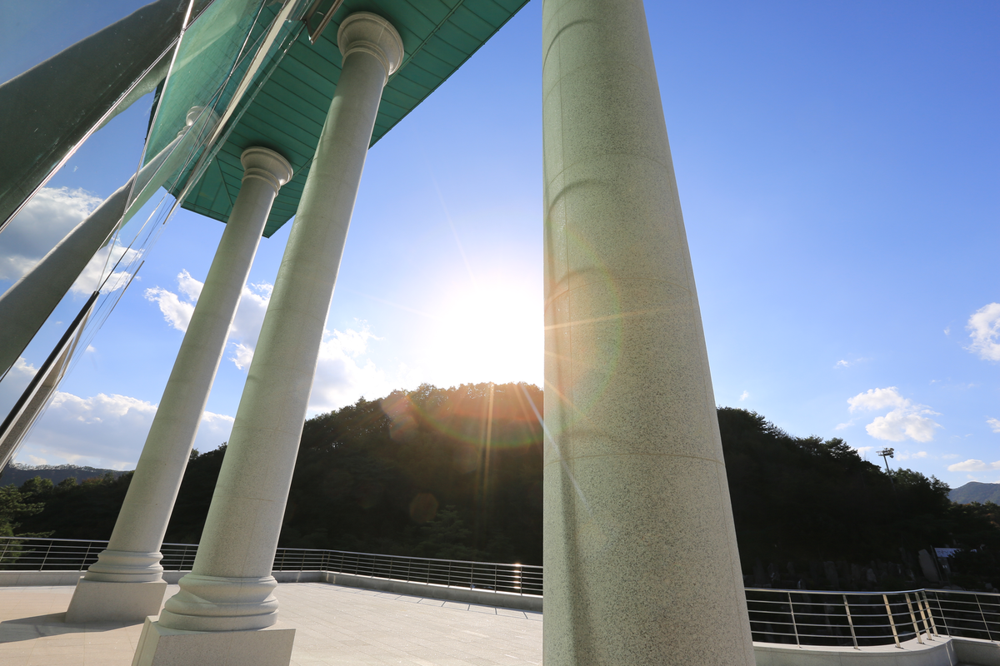
official-pillar column-detail柱頭、柱腳、圓柱分段與屋簷底部近照；適合細節核對，不適合單張生成整棟。
1200 × 800 · 拍攝日期未知 · 頁面日期 未標示來源頁
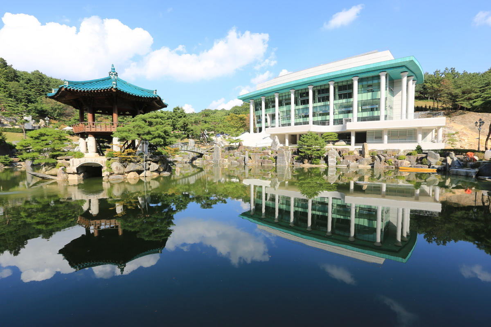
official-octagonal-pavilion context建築與湖中亭同框；亭子是另一個物件，不能讓AI合併成會館附件。
1200 × 800 · 拍攝日期未知 · 頁面日期 未標示來源頁
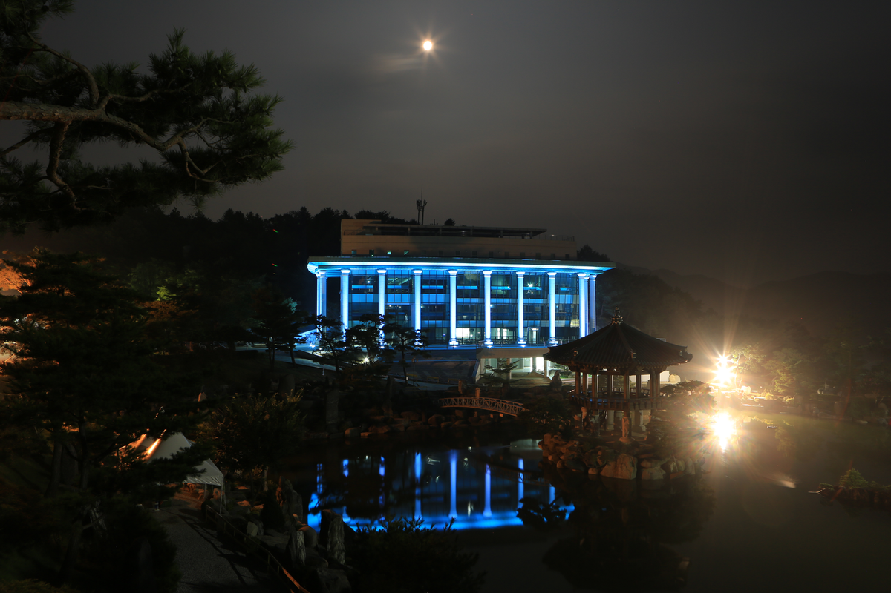
official-night night-only夜景輪廓與立面照明；藍色燈光不是白日材質顏色。
1200 × 800 · 拍攝日期未知 · 頁面日期 未標示來源頁
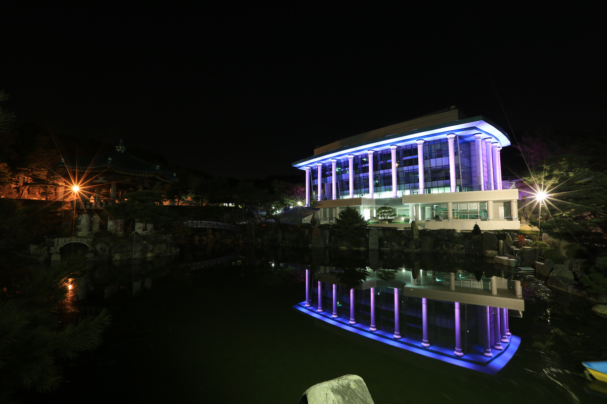
official-reflection night-only紫色夜景及水面倒影；不要把倒影生成為第二棟建築。
1200 × 800 · 拍攝日期未知 · 頁面日期 未標示來源頁
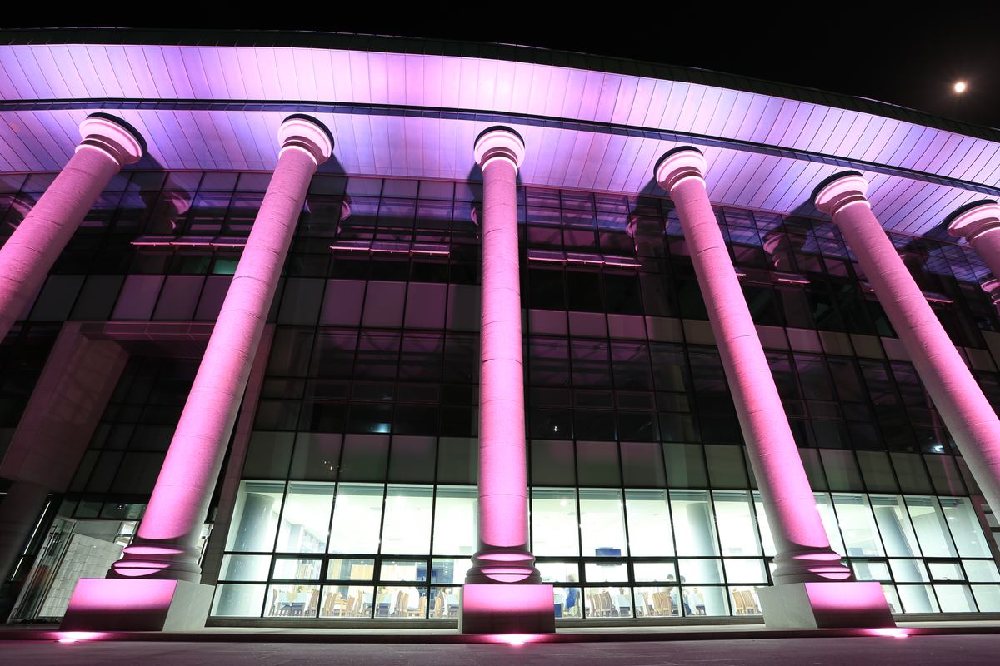
official-night-light night-only柱列夜間近景：柱頭、玻璃分格與簷底可核對；紫紅光不是石柱固有顏色。
1200 × 800 · 拍攝日期未知 · 頁面日期 未標示來源頁
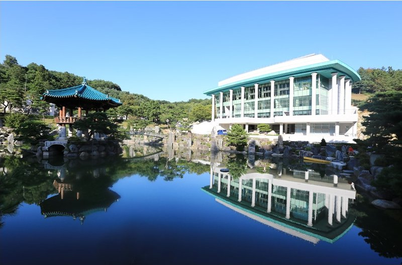
tw-guide-21 context跨湖斜角與湖中亭。照片可比對綠色簷帶，建築身分由文章同名說明佐證。
800 × 528 · 拍攝日期未知 · 頁面日期 2021-08-23來源頁
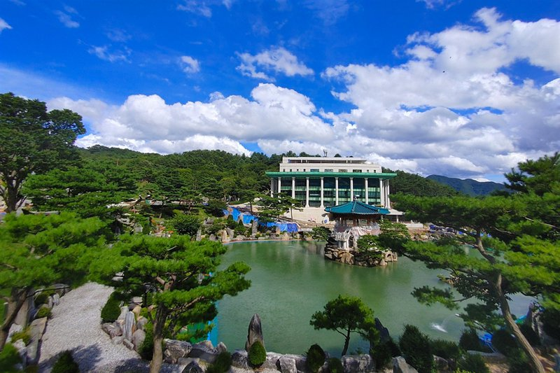
tw-guide-22 context遠景全區圖；屋頂高低關係可作輔助，主體在畫面中偏小。
800 × 533 · 拍攝日期未知 · 頁面日期 2021-08-23來源頁
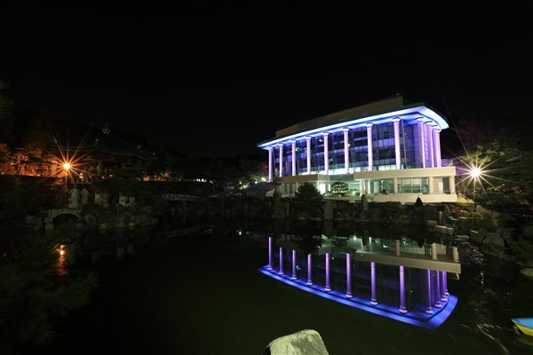
tw-guide-23 night-only夜景與倒影，僅作燈光、環境參考。
600 × 400 · 拍攝日期未知 · 頁面日期 2021-08-23來源頁
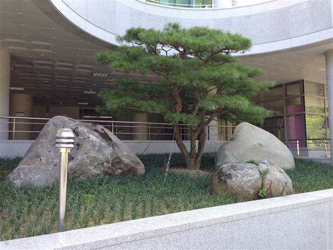
front2013-00 historical-detail2013年歷史近照：前方綠化與弧形基座／簷下空間；並非完整正立面。
650 × 487 · 拍攝日期未知 · 頁面日期 2013-08-17來源頁
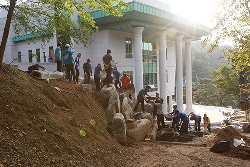
rear2013-00 historical-side2013年背側施工：可見白色側牆與高柱，但坡地、工程及樹木遮擋；非現況背面。
500 × 333 · 拍攝日期未知 · 頁面日期 2013-09-03來源頁
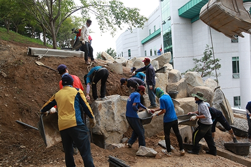
rear2013-03 historical-side2013年背側白牆與小窗，施工中局部；不能推定所有背面細節。
500 × 333 · 拍攝日期未知 · 頁面日期 2013-09-03來源頁
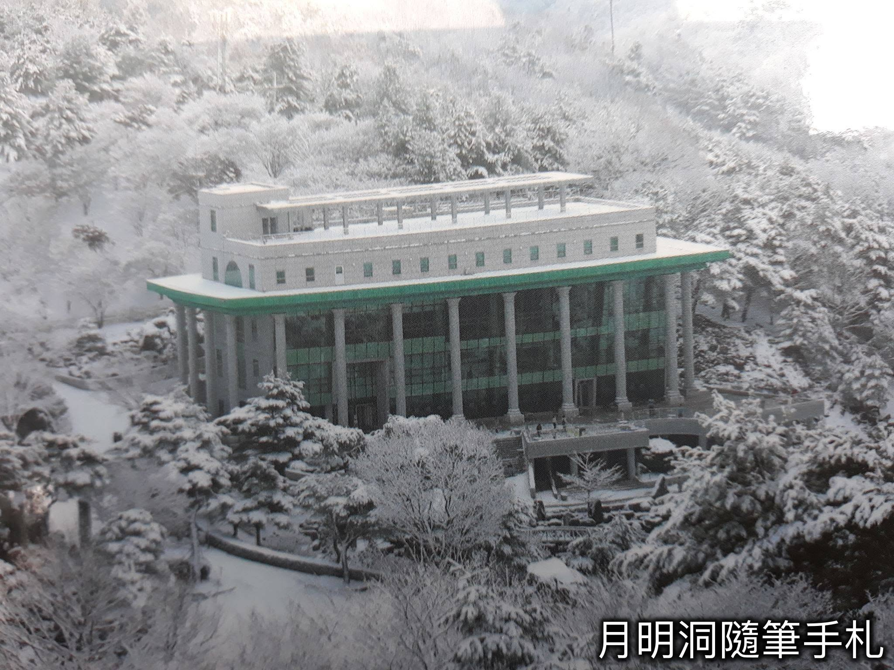
user-winter upper-volume-user高視角斜向全景：上方白色退縮樓體、長條屋頂棚架與露台清楚；有掃描／網紋、積雪及浮水印。只參考幾何，不複製這些影像效果。
2048 × 1536 · 拍攝日期未知 · 頁面日期 未標示使用者提供；原拍攝者與拍攝日期未知
照片原檔未修改；未上傳第三方AI；已另行建立本機模型初稿，未改核心遊戲。來源照片保有原著作權，公開使用與第三方上傳請確認權限或換成自有照片。